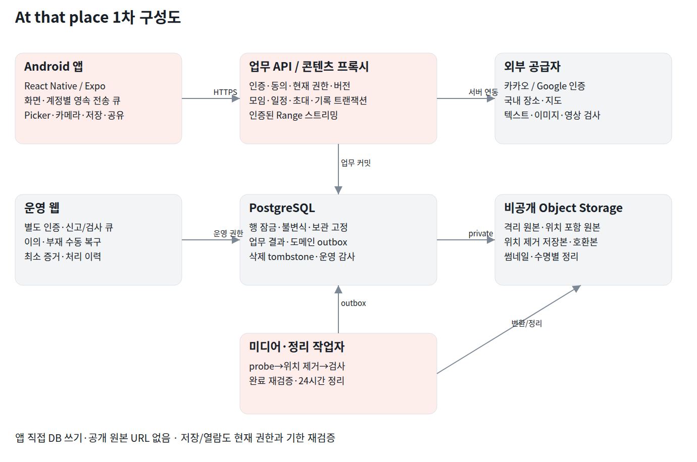

1차 개발 구현 설계 v0.3 · 기준 기능명세서 v2(2026-10-22) 우선 · 2026-10-22
At that place 1차 기준은 패키지 내부 기준/기능명세서.md(v2, 2026-10-22)의 F01~F28·P01~P12이며 Android12(API31)+, Asia/Seoul 고정이다. 상위 원본과 동일한 SHA256 사본을 포함한다. v0.3은 2026-10-20 회의 피드백 10건(초대 50회·반복 폐지·일정 시각 제거·수동 일정·UI16/19 통합·보기 방식·길게 눌러 저장·외부 공유 제거·사진5/영상2·장소15)을 반영한 명세 v2를 따른다.
실행 DB 정의·업로드 프로토콜·업무 결과 형식·선별 재사용 범위(v0.2)에 더해 v0.3에서 일정 모델 단순화·한도 트리거·초대 횟수·보기 방식·공통 선택 화면을 반영했다. 09 구현 계약 보완 0절과 부록/DB/001_initial.sql·부록/openapi.json을 함께 적용한다. 실제 공급자 등록·문서·연락처·실기기 측정은 출시 준비다.
읽는 순서: 01 시스템 → 02 DB → 03 API → 04 업무흐름 → UI/05 UI설계.pptx와 화면명세.xlsx → 06 검수및추적.xlsx. 문서 전체에서 F번호·UI번호·operationId를 연결 키로 사용한다.
포함: 카카오/Google 로그인, 동의·표시명, 10명 고정 모임, 첫 일정 동시 생성, 초대별 링크/코드(7일·확인 50회), 기간 일정 수동 추가·변경·취소, 카카오맵 장소·수기 등록·방문 예정 시각(일차별 15개), 방문계획, 1~5초 촬영, 기기 파일, 120개 다중 처리(작성자별 방문당 사진5·영상2), 파일별 업로드·검사·재시도, 공동감상(시간순·사람별 묶음), 위치제거 휴대폰 저장, 본인 기록, 3개월 보관, 참여·방장·계정 생명주기, 신고·운영·수동복구·캐시·문의.
제외: iOS/Apple로그인, 반복 일정·일정 시각(종일/시간) 지정, 사진·영상의 다른 앱 공유(OS 공유창), 영상 프로젝트·편집·이어붙이기·자막·완성 영상 생성, 결제/구독/보관연장, 댓글/좋아요/친구/공개피드/공동편집, 일정 푸시·외부 캘린더 동기화, 부방장·비활동 자동 이전. 초대 메시지의 외부 앱 공유, OS의 업로드 진행 알림과 운영 복구용 계정 알림은 포함 동작이다.
Android 앱은 React Native·Expo 신규 앱 셸에 DayLog의 촬영·파일 처리 후보를 선별 이식한다. 기존 로컬 업무 DB·편집·알림·라우팅은 재사용하지 않는다. 기존 코드가 없어도 기준 명세와 UI/API 계약으로 구현할 수 있다. Expo57/RN0.86.3/React19.2.3 선언 조합과 채택 조건은09 문서·기준/재사용후보.json을 따른다.
업무 API(BFF): 내부 로그인 식별·동의·권한, 모임/일정/방문·한도/계획 트랜잭션, 파일 접수·완료·일괄 수정·삭제, 콘텐츠 인증 스트리밍, 운영 작업을 제공한다. 앱의 직접 DB 쓰기와 스토리지 공개 읽기를 허용하지 않는다.
PostgreSQL: 내부 사용자·참여세대·일정·방문 한도·보관고정·업로드·집계·업무결과를 보관한다. 모임행/일정행/사용자행 잠금과 버전 조건을 함께 사용한다. Storage: 격리 원본, 위치포함 비공개원본, 위치제거 저장본, 호환본, 썸네일을 private 영역으로 분리한다.
작업자: probe→위치제거 검증→호환본→콘텐츠검사→완료확정 순서를 수행한다. 동영상 파싱/변환은 네트워크 격리·CPU/메모리/실행시간 제한이 있는 작업 프로세스에서 처리한다. 작업자 중복 수행은 허용하되 완료 확정은 taskId로 한번만 한다.
운영 웹: 별도 인증·역할로 검사/신고/이의/서비스 제한·복구 큐를 처리한다. 일반 방장 권한과 분리하며 대상·사유·처리자·시간·전후상태의 감사이력을 필수 저장한다.
배포안: API와 작업자는 별도 프로세스, DB·private object storage·키 관리·암호화 증거 저장소·모니터링을 구성한다. 초기에는 DB outbox를 작업 전달 원천으로 사용해 외부 메시지 브로커 의존을 줄인다. 트래픽 증가 때 같은 이벤트 계약으로 별도 큐를 붙일 수 있다.
서버 도구는 Node24·TypeScript·Fastify5·pg8, PostgreSQL16, 번호별 SQL 마이그레이션으로 선택했다. ORM은 사용하지 않는다. 작업자 도구·운영자 OIDC/MFA·실제 로컬 구현과 테스트 대역 구분은09 문서에서 정의한다.

공급자 토큰/인가 결과는 서버에서 공급자·audience·nonce·만료·서명 또는 공급자 확인 응답을 검증한다. 내부 식별은 UNIQUE(provider,subject)이며 이메일을 사용자 식별키로 쓰지 않는다. 로그인 시도 state/nonce·PKCE가 필요한 인증 경로는 attempt에 묶고 재사용을 막는다.
중요한 충돌: 기존 XLSX의 Supabase Auth 방식을 그대로 적용하면 이메일 기반 자동 identity 연결 정책과 최신 F01의 자동병합 금지 요구가 맞지 않을 수 있다. 본 설계는 업무 API에서 공급자 subject→내부 user 연결을 관리하고 명시적 연결 절차만 허용한다. Supabase는 DB/Storage 호스팅 후보로 유지할 수 있으나 기본 Auth 계정 연결 동작을 기능 검증 없이 재사용하지 않는다.
앱 토큰은 기기 보안 저장소, 서버 refresh 원문은 보관하지 않고 hash와 기기세션으로 관리한다. access 15분·refresh 30일은 제안값이며 계정 제한/삭제·세션폐기는 매 요청 현재 상태로 확인한다. 사용자·계정 삭제·연결/해제 등 재인증 유효기간은 5분을 제안한다.
모든 콘텐츠 요청은 actor/account/group/membership/author/owner/retention/moderation/personal block 조건을 서버에서 판정한다. 일반 공동 조회와 본인 보존 조회를 별도 DTO와 context로 구분한다. 참여종료 후 본인 열람/삭제만 허용하고 export로 우회하지 못한다.
파일 GET은 인증 프록시에서 현재 권한·기한을 검사한다. 파일 업로드도 인증 HEAD/PATCH로 격리 청크를 기록하고 DB의 확정 offset으로 재개한다. 공개 버킷·직접 원본 GET을 허용하지 않는다. 전송 프로토콜은09 문서와 OpenAPI uploadHead/uploadChunk를 적용한다.
auth: 게이트·공급자로그인·동의·연결수단·pendingInvite. groups: 목록/생성/관리/초대(횟수 표시)/참여/참여자. schedules: 달력·수동 추가·변경(기간 밖 영향 확인)·취소·삭제. plans: 검색·수기장소·예정 시각·일자계획(15개). records: 후보·메타정보·남은 개수·전송큐·공동목록(시간순/사람별)·감상·공통 선택 화면·본인기록. settings: 캐시/로그아웃/동의/삭제/문의. ops: 별도 웹.
서버 데이터 캐시는 계정키+모임키로 분리하고 로그아웃/퇴장/차단/삭제 이벤트에서 무효화한다. 촬영 임시원본·재생 캐시·공유 임시본은 저장 경로와 정리 정책을 분리한다. 화면 상태는 기준월·선택일정·필터·정렬·스크롤을 화면키로 보관한다.
한도(방문 15·사진 5/영상 2·초대 50회)의 남은 수는 서버 응답을 기준으로 표시한다. 로컬 입력 검증은 사용자 안내용이며 서버 권한·규격·버전·한도 검증을 대체하지 않는다. 시간순 정렬키 COALESCE(촬영시각,완료시각)는 서버가 sortAt/sortBasis로 제공한다.
입력 문자열은 NFC 후 사용자 인식 문자(grapheme cluster)로 길이를 계산한다. 제목/이름은 줄바꿈 금지, 설명/사유는 내부 줄바꿈 보존. 앞뒤 공백 제거. 장소 중복 비교는 추가로 연속 공백을 정리한다. 클라이언트와 서버가 동일 테스트 벡터를 공유한다.
쓰기 요청은 Idempotency-Key, X-Request-Id와 대상 expectedVersion을 사용한다. 같은 actor/route/key의 같은 본문은 같은 결과/작업을 반환하고 다른 본문은409로 거부한다. 응답 유실은 결과불명으로 처리하여 작업조회 후 복구한다.
오프라인에서는 신규 조회/등록/편집을 막고 임시입력·보류파일을 유지한다. 불가역 동작을 로컬 성공으로 미리 표시하지 않는다. 버전 충돌은409와 최신버전/필드별 사유를 반환하고 입력을 보존한다.
모임당 원본 5,000,000,000바이트. 접수 시 미완료 파일 예약까지 합산하고 실패/취소 예약 반환, 삭제/만료는 실제 원본정리 후 반환한다. 파생본은 사용자 사용량에서 제외하되 운영비 지표로 집계한다. 파일전송은 계정/기기당3개, 자동재시도1·2·4초 후최대3회, 오프라인대기는 횟수 미소모다.
목록은 모임30개/파일60개 커서, 선택/업무요청 최대120개. 인덱스는 사용자별 활성참여·모임활동·일정날짜·묶음정렬·작성자·만료작업에 둔다. 사용자별 차단을 반영하지 않은 전체 count를 공동집계로 보여주지 않는다.
검수 목표: Android12 RAM4GB와 보급형 실기기,10Mbps/RTT100ms,모임100개·일정기록1000개에서 p95 목록첫표시2초·후속1초·영상시작3초·버튼반응100ms. 파일전송/검사는 별도 진행상태로 측정한다. 이 수치는 명세의 목표이며 실제 달성을 확인한 결과가 아니다.
접근 차단과 물리정리를 분리한다. 삭제/만료 즉시 새 접근 거부, 라이브 원본·파생본24시간내정리, 백업최대30일. 복원 절차는 삭제/만료 tombstone을 먼저 적용하고 파일 공개를 재개한다. 오래된 정리 이벤트는 대상 generation과 현재상태를 재검증한다.
배포 환경은 development/staging/production으로 계정·키·버킷·DB·운영권한을 분리한다. DB마이그레이션은 사전검증→배포→데이터 검증→앱점진배포 순서다. 스키마 변경은 확장 후전환 방식이며 되돌리기로 삭제 파일을 복구하지 않는다.
로그에는 requestId·operationId·비식별 오류코드·시간·용량만 남기고 공급자토큰·초대원문·서명주소·미디어본문·신고자증거를 남기지 않는다. 모니터링은 미완료큐연령·검토SLA·정리24h초과·용량불일치·인증실패·작업중복확정을 감시한다.
실제 카카오/Google 앱등록·서명키/리디렉트·Android App Links 도메인·지도계정·저장지역·검사엔진·문의연락처·운영인력·동의문서는 출시준비 결정사항이다. 데모 목업을 실제 연동 완료로 판정하지 않는다.
| ID | 자료 | 반영 범위 | 우선순위 |
|---|---|---|---|
| S1 | 기준/기능명세서.md | 원본과 동일한 SHA256 사본·F01~F28·P01~P10 | 패키지 내부 구현 최우선 기준 |
| S2 | 설계 자료/프로젝트 소개.pdf | 14페이지 전체 시각 검토: 핵심가치·브랜드·탐색·업로드 구상 | 구조/브랜드 참고, 충돌은S1우선 |
| S3 | 설계 자료/화면 명세 데이터.xlsx | 16시트의 텍스트·화면설계 내 이미지·토큰·API·권한·정책 | 선행설계 참고, 개발중 표시는 현재검증아님 |
| S4 | 기능 명세서 자료/ReelSpot-Demo.apk | 이번 실행의 PNG·UI XML·행동기록·APK SHA256 | 실제 데모 UI 관찰 |
| S5 | 기능 명세서 자료/artifacts/research/2026-10-17_1차_세부기능_결정근거.md | 기능선택·제외·초기값 결정근거 | S1 해석 보조 |
| S6 | 10월_20일_회의.md | 2026-10-20 회의 피드백 10건(초대 50회·반복 폐지·종일 제거·수동 일정·UI16/19 통합·보기 방식·길게 눌러 저장·공유 제거·사진5/영상2·장소15) | v2 명세·v0.3 설계의 변경 원천 |
| S7 | 설계_피드백_검토_및_대응방향.md | 설계 검토 엑셀 5건의 권장안 | 1~3번 미확정 유지, 4·5번은 회의 결정으로 해소 |
| T1 | https://www.postgresql.org/docs/current/explicit-locking.html | 행 잠금·잠금순서·교착 회피에 대한 공식 설명 | 기술근거·2026-10-17 확인 |
| T2 | https://developer.android.com/develop/background-work/background-tasks/persistent | 지속 백그라운드 작업 스케줄링에 대한 공식 설명 | WorkManager 검증항목 근거·2026-10-17 확인 |
| T3 | https://supabase.com/docs/guides/storage/security/access-control | private storage 접근 제어·RLS 구성 | 저장소 경계 참고·2026-10-17 확인 |
| T4 | https://supabase.com/docs/guides/auth/auth-identity-linking | 자동·수동 identity 연결 정책 | F01 자동병합금지와 기존인증안 차이 검토·2026-10-17 확인 |
| T5 | https://fastify.dev/docs/latest/Reference/LTS/ | Fastify 지원 정책 | 도구 선택 근거·2026-10-17 확인 |
| T6 | https://node-postgres.com/features/transactions | 동일 client의 명시적 트랜잭션 | pg 선택·2026-10-17 확인 |
| T7 | https://docs.expo.dev/versions/v57.0.0/ | SDK57/RN0.86/React19.2.3 대응 | 선언 조합 확인, 실제 빌드 결과 아님 |
| T8 | https://www.postgresql.org/docs/16/ddl-constraints.html | 물리 제약과 FK 정의 | 초기 스키마 근거·2026-10-17 확인 |
| T9 | https://ffmpeg.org/ffmpeg.html | 미디어 변환·metadata 제어 | 작업자 도구 선택·실파일 위치 검증 별도 |
| T10 | https://raw.githubusercontent.com/exiftool/exiftool/master/html/exiftool_pod.html | 메타데이터 읽기·쓰기·지원 형식 | 위치 제거 재검증 도구 선택, 실제 형식별 검증 필요 |